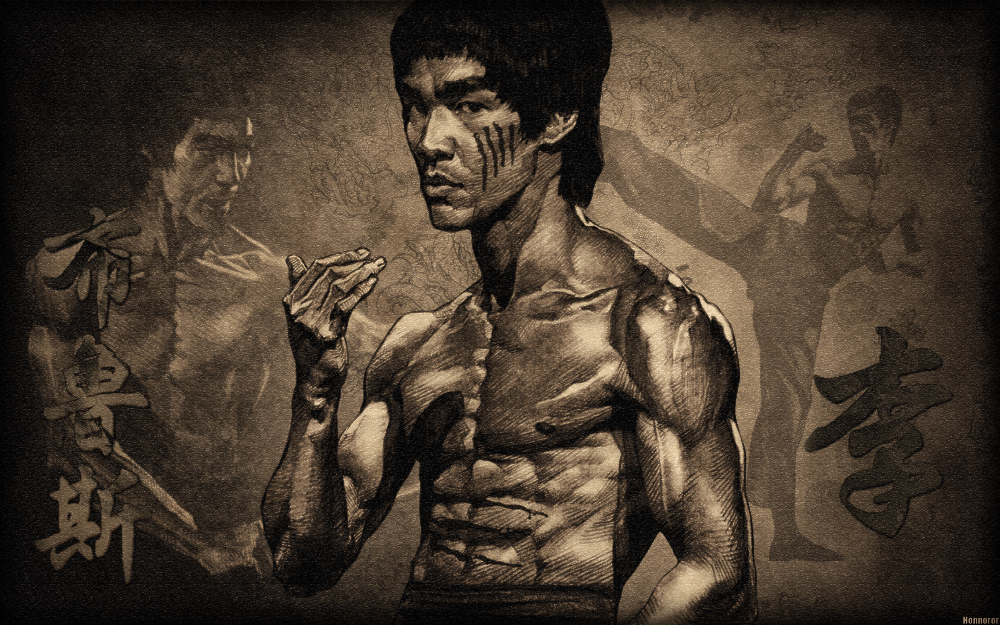

With the gaze of a warrior and the precision of a master, Bruce Lee wasn’t just
a fighter—he was a force of nature. His speed defied cameras, his power shattered limits, and his
philosophy reshaped martial arts forever. A man who moved like water, struck like lightning, and left
behind a legacy that still roars like a dragon. Fearless. Unstoppable. Legendary
The incredible Bruce Lee facts!
Bruce Lee's punches and kicks were so fast that filmmakers had to slow down his fight scenes so
audiences could actually see them!
He founded Jeet Kune Do (The Way of the Intercepting Fist)—a revolutionary, fluid martial art
that focused on adaptability and efficiency, breaking traditional martial arts rules.
His famous one-inch punch was so powerful that it could knock a man off his feet with almost no
wind-up.
Bruce Lee wasn't just about fighting—he studied philosophy at the University of Washington and
wrote deep insights about life, discipline, and self-improvement.
Before Bruce Lee, Hollywood rarely cast Asian actors in strong leading roles. His impact broke
racial barriers and inspired future martial arts icons like Jackie Chan and Jet Li.